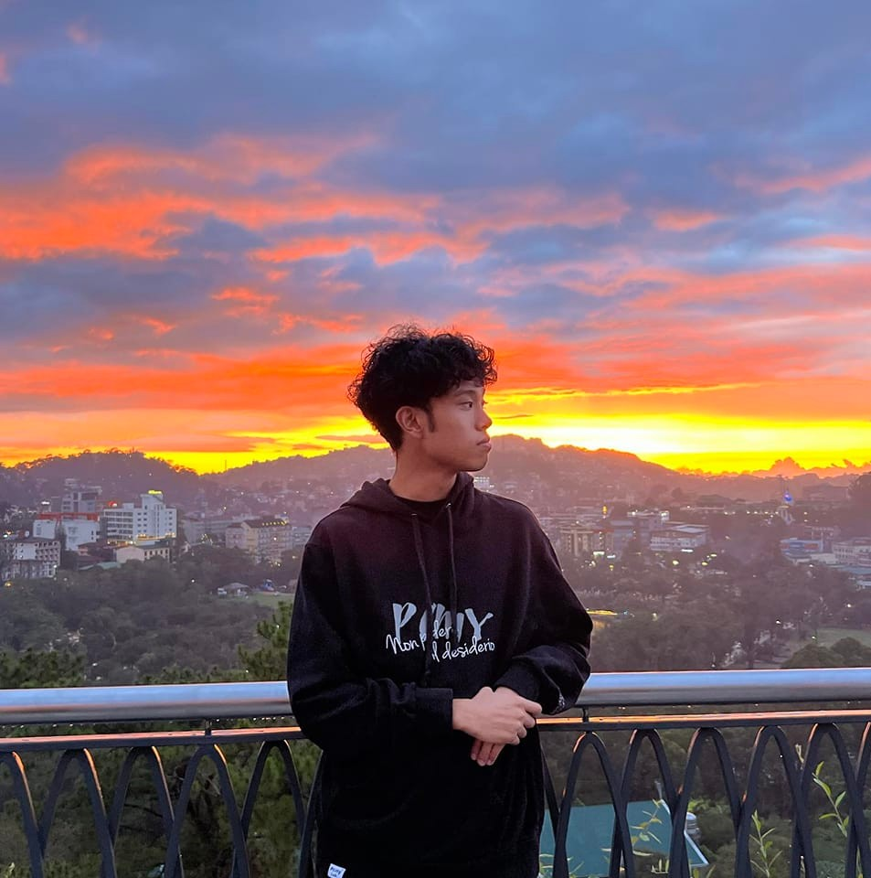

My Resume

Manalo, Stephen Andrei L.
Summary
I am a junior web developer passionate about creating clean, simple, and functional
designs. I enjoy building websites, learning new technologies, and turning ideas
into working projects.
Education
- Elementary - Bakakeng Norte Elementary School
- High School - Baguio City High
- Senior High - Baguio City High School
Work Experience
- Digital Artist at the Baguio Museum
- Designed Web Landing page using wordpress in College
- Designed blogposts using wordpress in Senior High School
Skills
- Basic understanding in Wordpress and Figma
- Detail Oriented
- Basic HTML and CSS
Awards
- CCNA:Intoduction to Networks Certificate
- CCNA: Switching, Routing, and Wireless Essentials Certificate
- Senior High School Honors
Contacts